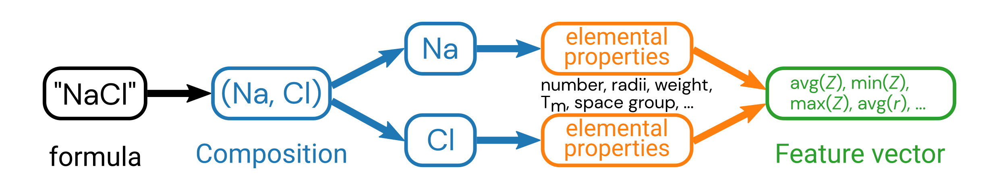

Review of matminer features¶
Authors: Enze Chen and Mark Asta (University of California, Berkeley)
Note
This is an interactive exercise, so you will want to click the and open the notebook in DataHub (or Colab for non-UCB students).
Learning objectives¶
This notebook contains a series of exercises that review the matminer package for generating features in an automated way. By the end of this notebook, you should be able to:
Generate features from the chemical formula.
Generate features from the crystal structure.
We will rely on the matminer package for implementing these algorithms.
Motivation¶
So far, it sounds like everyone is off to a good start and thinking deeply about what properties might exhibit correlations with the dielectric constant \(\varepsilon\). This is a really important step at the beginning of any data-driven pipeline and it’s good practice for you to assemble the code infrastructure for a few manual cases before jumping into an automated approach.
That being said, you’re probably running out of materials properties that are present “by default” in MP, so it’s time to think about what new features we can generate (also called feature engineering) from the data that is there. We want these features to be physically meaningful, so we’ll take a look at the chemical formula and crystal structure and how we can use featurizers from matminer to convert these objects into new features.
Import Python packages¶
import numpy as np
import pandas as pd
pd.set_option('display.max_columns', None)
pd.set_option('display.max_rows', 300)
import matplotlib.pyplot as plt
%matplotlib inline
from sklearn.linear_model import LinearRegression
from sklearn.preprocessing import StandardScaler
from sklearn.metrics import mean_squared_error, mean_absolute_error
from sklearn.model_selection import KFold, cross_val_score, cross_val_predict
plt.rcParams.update({'figure.figsize':(8,6), # Increase figure size
'font.size':20, # Increase font size
'mathtext.fontset':'cm', # Change math font to Computer Modern
'mathtext.rm':'serif', # Documentation recommended follow-up
'lines.linewidth':5, # Thicker plot lines
'lines.markersize':12, # Larger plot points
'axes.linewidth':2, # Thicker axes lines (but not too thick)
'xtick.major.size':8, # Make the x-ticks longer (our plot is larger!)
'xtick.major.width':2, # Make the x-ticks wider
'ytick.major.size':8, # Ditto for y-ticks
'ytick.major.width':2, # Ditto for y-ticks
'xtick.direction':'in',
'ytick.direction':'in'})
### Load in your MP API key
api_key = None
try: # this is for running locally
import os
api_key = os.environ['MAPI_KEY']
except: # this is for running on DataHub
with open('../../assets/files/mp_api_key.txt', 'r') as f:
api_key = f.readlines()[1].strip()
# assert helps catch potential bugs
assert api_key is not None, 'API key not set correctly in environment!'
assert api_key != '', 'API key not found in mp_api_key.txt file!'
Step 1: Fetch and organize the data¶
We haven’t shown mechanical properties much love in this module, so let’s run a MAPI query for the elastic constants, focusing on the bulk modulus \(K\) in particular.
from pymatgen.ext.matproj import MPRester
# run the query
with MPRester(api_key) as mpr:
entries = mpr.query(criteria={'nelements': 2, # this is just to keep the dataset small
'e_above_hull': {'$lte': 0.01},
'elasticity': {'$exists': True}},
properties=['pretty_formula', 'structure', 'elasticity'])
# format data from JSON to DataFrame (tabular) --- hopefully this block looks familiar!
formulas = []
structures = [] # we'll use this later
bulk_mod = []
for entry in entries:
formulas.append(entry['pretty_formula'])
structures.append(entry['structure'])
bulk_mod.append(entry['elasticity']['K_VRH'])
df = pd.DataFrame({
'formula': formulas,
'structure': structures,
'bulk_modulus': bulk_mod
})
df.head()
| formula | structure | bulk_modulus | |
|---|---|---|---|
| 0 | BaTe | [[0. 0. 0.] Ba, [3.544879 3.544879 3.544879] Te] | 26.0 |
| 1 | TaS2 | [[ 1.68831334e+01 -5.55599490e-17 2.38905639e... | 18.0 |
| 2 | LuSi | [[ 2.083115 -3.70264799 2.82574575] Lu, [2.... | 95.0 |
| 3 | NbS2 | [[0. 0. 3.31224925] Nb, [0. ... | 23.0 |
| 4 | DySb | [[0. 0. 0.] Dy, [3.102107 3.102107 3.102107] Sb] | 59.0 |
Chemical formula features¶
The first featurizer we’ll discuss, which is a review of the “Featurization” notebook, is the composition featurizer, which generates chemical features from the chemical formula.
We will specifically showcase the ElementProperty class, and this time do it with a little more granularity so you can pick the features that are important to you.
The procedure is as follows:
Perform a MAPI query using Pymatgen to fetch data (we’ve done this already).
Convert the chemical formula from
strto a PymatgenCompositionobject in a new column.Construct an
ElementProperty()object that specifies which new features to generate.Use the
featurize_dataframe()method to generate many new columns in theDataFrame, one for each feature.
Step 2: str to Composition¶
from matminer.featurizers.conversions import StrToComposition
# create an object for converting formula --> Composition
str_to_comp = StrToComposition(target_col_id='composition')
# perform the conversion and add a new column to the DataFrame
df_comp = str_to_comp.featurize_dataframe(df, col_id='formula')
# show the results
df_comp.head()
| formula | structure | bulk_modulus | composition | |
|---|---|---|---|---|
| 0 | BaTe | [[0. 0. 0.] Ba, [3.544879 3.544879 3.544879] Te] | 26.0 | (Ba, Te) |
| 1 | TaS2 | [[ 1.68831334e+01 -5.55599490e-17 2.38905639e... | 18.0 | (Ta, S) |
| 2 | LuSi | [[ 2.083115 -3.70264799 2.82574575] Lu, [2.... | 95.0 | (Lu, Si) |
| 3 | NbS2 | [[0. 0. 3.31224925] Nb, [0. ... | 23.0 | (Nb, S) |
| 4 | DySb | [[0. 0. 0.] Dy, [3.102107 3.102107 3.102107] Sb] | 59.0 | (Dy, Sb) |
Steps 3 and 4: Composition to FEATURES 💥¶
Note that these chemical formulas all have two elements in them, so it’s not so intuitive what information to extract from the elements in this formula.
Pay attention to how we are specifying the Magpie elemental features (original paper).
Remember what this is doing is taking the property (such as AtomicWeight or MeltingT) of all of the constituent elements and calculating an average, maximum, minimum, etc. and using these statistical quantities of elemental properties as features.
There are more composition featurizers you can try, which will be left as an exercise to the reader.

Pause and reflect: Why do we calculate statistical quantities of the individual elemental features?
from matminer.featurizers.composition import ElementProperty
# these are all the Magpie features. You can choose fewer if you want.
features = ['Number', 'MendeleevNumber', 'AtomicWeight', 'MeltingT',
'Column', 'Row', 'CovalentRadius', 'Electronegativity',
'NsValence', 'NpValence', 'NdValence', 'NfValence', 'NValence',
'NsUnfilled', 'NpUnfilled', 'NdUnfilled', 'NfUnfilled', 'NUnfilled',
'GSvolume_pa', 'GSbandgap', 'GSmagmom', 'SpaceGroupNumber']
# these are the statistical quantities we can compute
stats = ['mean'] # we can also add 'minimum', 'maximum', 'range', 'avg_dev', 'mode'
featurizer = ElementProperty(data_source='magpie',
features=features,
stats=stats)
# featurizer = ElementProperty.from_preset('magpie') # this is what we had last time
# generate the features
df_features = featurizer.featurize_dataframe(df_comp, col_id='composition')
feature_labels = featurizer.feature_labels() # this extracts the ugly names; but same order as "features" up above
# see the changes
df_features.head()
| formula | structure | bulk_modulus | composition | MagpieData mean Number | MagpieData mean MendeleevNumber | MagpieData mean AtomicWeight | MagpieData mean MeltingT | MagpieData mean Column | MagpieData mean Row | MagpieData mean CovalentRadius | MagpieData mean Electronegativity | MagpieData mean NsValence | MagpieData mean NpValence | MagpieData mean NdValence | MagpieData mean NfValence | MagpieData mean NValence | MagpieData mean NsUnfilled | MagpieData mean NpUnfilled | MagpieData mean NdUnfilled | MagpieData mean NfUnfilled | MagpieData mean NUnfilled | MagpieData mean GSvolume_pa | MagpieData mean GSbandgap | MagpieData mean GSmagmom | MagpieData mean SpaceGroupNumber | |
|---|---|---|---|---|---|---|---|---|---|---|---|---|---|---|---|---|---|---|---|---|---|---|---|---|---|---|
| 0 | BaTe | [[0. 0. 0.] Ba, [3.544879 3.544879 3.544879] Te] | 26.0 | (Ba, Te) | 54.000000 | 49.500000 | 132.463500 | 861.330000 | 9.000000 | 5.500000 | 176.500000 | 1.495000 | 2.000000 | 2.000000 | 5.000000 | 0.000000 | 9.000000 | 0.000000 | 1.000000 | 0.000000 | 0.0 | 1.000000 | 49.176667 | 0.2320 | 0.000000 | 190.5 |
| 1 | TaS2 | [[ 1.68831334e+01 -5.55599490e-17 2.38905639e... | 18.0 | (Ta, S) | 35.000000 | 74.666667 | 81.692627 | 1355.573333 | 12.333333 | 4.000000 | 126.666667 | 2.220000 | 2.000000 | 2.666667 | 1.000000 | 4.666667 | 10.333333 | 0.000000 | 1.333333 | 2.333333 | 0.0 | 3.666667 | 23.231250 | 1.4680 | 0.000000 | 123.0 |
| 2 | LuSi | [[ 2.083115 -3.70264799 2.82574575] Lu, [2.... | 95.0 | (Lu, Si) | 42.500000 | 59.500000 | 101.526150 | 1811.500000 | 8.500000 | 4.500000 | 149.000000 | 1.585000 | 2.000000 | 1.000000 | 0.500000 | 7.000000 | 10.500000 | 0.000000 | 2.000000 | 4.500000 | 0.0 | 6.500000 | 24.652500 | 0.3865 | 0.001124 | 210.5 |
| 3 | NbS2 | [[0. 0. 3.31224925] Nb, [0. ... | 23.0 | (Nb, S) | 24.333333 | 74.333333 | 52.345460 | 1175.573333 | 12.333333 | 3.666667 | 124.666667 | 2.253333 | 1.666667 | 2.666667 | 1.333333 | 0.000000 | 5.666667 | 0.333333 | 1.333333 | 2.000000 | 0.0 | 3.666667 | 23.251250 | 1.4680 | 0.000000 | 123.0 |
| 4 | DySb | [[0. 0. 0.] Dy, [3.102107 3.102107 3.102107] Sb] | 59.0 | (Dy, Sb) | 58.500000 | 58.000000 | 142.130000 | 1294.390000 | 9.000000 | 5.500000 | 165.500000 | 1.635000 | 2.000000 | 1.500000 | 5.000000 | 5.000000 | 13.500000 | 0.000000 | 1.500000 | 0.000000 | 2.0 | 3.500000 | 31.400000 | 0.0000 | 0.000000 | 180.0 |
What can we do with these new features?¶
You can use these columns for the same things you were doing with your original features like “density” or “formation energy.” For example, we can plot them against the bulk modulus:
# we can make a series of plots in one swell foop
for i in range(4):
single_feature = feature_labels[i]
fig, ax = plt.subplots()
ax.scatter(df_features[single_feature], df_features['bulk_modulus'], s=50)
ax.set_xlabel(single_feature)
ax.set_ylabel('bulk modulus (MPa)')
plt.show()
We can also compute some correlations too.
Change the method in df.corr() and see what happens.
# trim the DataFrame
features_subset = ['bulk_modulus'] + feature_labels[:4]
features_subset_cleaned = [f.split()[-1] for f in features_subset] # clean it up for plotting
df_subset = df_features[features_subset]
# construct a correlation matrix
method = 'pearson'
corr_matrix = df_subset.corr(method=method)
# plot the correlations
fig, ax = plt.subplots()
h = ax.imshow(corr_matrix, cmap='coolwarm', vmin=-1, vmax=1) # haha you can prob choose better colors
ax.set_xticks(range(len(features_subset_cleaned)))
ax.set_xticklabels(features_subset_cleaned, rotation=60, fontsize=14)
ax.set_yticks(range(len(features_subset_cleaned)))
ax.set_yticklabels(features_subset_cleaned, fontsize=14)
plt.colorbar(h, label=f'{method} correlation coefficient')
plt.show()
We think matminer is a pretty cool package to know, and we hope it makes your lives a little bit easier.
Crystal structure features¶
While chemistry/composition plays a big role in materials properties, we know that materials structure is important as well.
After all, graphene, diamond, nanotubes, and buckyballs all have the same composition, but wildly different properties.
Another material property that we get “for free” at least from MP is the crystal structure of that material, which is encoded as a Pymatgen Structure object.
As we’ve already been discussing features related to crystal structure, we would like to use the structure to engineer relevant features.
The procedure is very similar to how we featurized the Composition up above.
But first, let’s explore what is available in a Structure object (recall that we stored this in the structure column of our initial DataFrame after querying the MAPI).
# get the first structure for demonstration
struct = df.loc[0, 'structure']
print(struct)
print()
print(f'The density is {struct.density}')
print()
print(f'The volume is {struct.volume}')
print()
print(f'The space group is {struct.get_space_group_info()}')
Full Formula (Ba1 Te1)
Reduced Formula: BaTe
abc : 5.013216 5.013216 5.013216
angles: 60.000000 60.000000 60.000000
Sites (2)
# SP a b c magmom
--- ---- --- --- --- --------
0 Ba 0 0 0 0
1 Te 0.5 0.5 0.5 0
The density is 4.937886195039478 g cm^-3
The volume is 89.09108390126052
The space group is ('Fm-3m', 225)
Automating the feature extraction¶
Hmm, it seems like there’s definitely useful information contained inside the Structure object.
But rather than enumerate these properties by hand, let’s see if we can extract them automatically using the following steps:
Obtain the
Structureusing the MAPI (we’ve done this).Construct a structure featurizer object from matminer that determines what new features to generate.
Use that object to featurize the
Structureand add new features as columns in our DataFrame.
There are many structure featurizers available in matminer, and we’ll opt for the simpler DensityFeatures featurizer below.
We encourage you to read about the other ones if you’re curious and we’re happy to explain what they mean.
from matminer.featurizers.structure import DensityFeatures
# construct the featurizer object with specifications - vpa is short for "volume per atom"
featurizer = DensityFeatures(desired_features=['density', 'vpa', 'packing fraction'])
# perform the featurization and extract the feature names
df_struct = featurizer.featurize_dataframe(df, col_id='structure', ignore_errors=True) # there is one error
struct_feature_labels = featurizer.feature_labels()
# clean it up and show the result
df_struct = df_struct.dropna(how='any', axis=0)
df_struct.head()
| formula | structure | bulk_modulus | density | vpa | packing fraction | |
|---|---|---|---|---|---|---|
| 0 | BaTe | [[0. 0. 0.] Ba, [3.544879 3.544879 3.544879] Te] | 26.0 | 4.937886 | 44.545542 | 0.596286 |
| 1 | TaS2 | [[ 1.68831334e+01 -5.55599490e-17 2.38905639e... | 18.0 | 6.161496 | 22.016373 | 0.320180 |
| 2 | LuSi | [[ 2.083115 -3.70264799 2.82574575] Lu, [2.... | 95.0 | 8.337416 | 20.220691 | 0.692968 |
| 3 | NbS2 | [[0. 0. 3.31224925] Nb, [0. ... | 23.0 | 4.019533 | 21.624821 | 0.325978 |
| 4 | DySb | [[0. 0. 0.] Dy, [3.102107 3.102107 3.102107] Sb] | 59.0 | 7.906141 | 29.851786 | 0.589904 |
Note that these are features derived from the entire structure, not the constituent elements (what we did for Magpie), so there’s no statistics to compute (mean, min, max, etc.).
What can we do with these new features?¶
Same thing as before! Since we like plots, let’s make a few plots. 🙂
Scatter plot¶
single_feature = struct_feature_labels[1] # we pick one that's kinda cool
fig, ax = plt.subplots()
ax.scatter(df_struct[single_feature], df_struct['bulk_modulus'], s=50)
ax.set_xlabel(single_feature)
ax.set_ylabel('bulk modulus (MPa)')
plt.show()
Correlation matrix¶
# trim the DataFrame
features_subset = ['bulk_modulus'] + struct_feature_labels
df_subset = df_struct[features_subset]
# construct a correlation matrix
method = 'pearson'
corr_matrix = df_subset.corr(method=method)
# plot the correlations
fig, ax = plt.subplots()
h = ax.imshow(corr_matrix, cmap='coolwarm', vmin=-1, vmax=1)
ax.set_xticks(range(len(features_subset)))
ax.set_xticklabels(features_subset, rotation=60, fontsize=14)
ax.set_yticks(range(len(features_subset)))
ax.set_yticklabels(features_subset, fontsize=14)
plt.colorbar(h, label=f'{method} correlation coefficient')
plt.show()